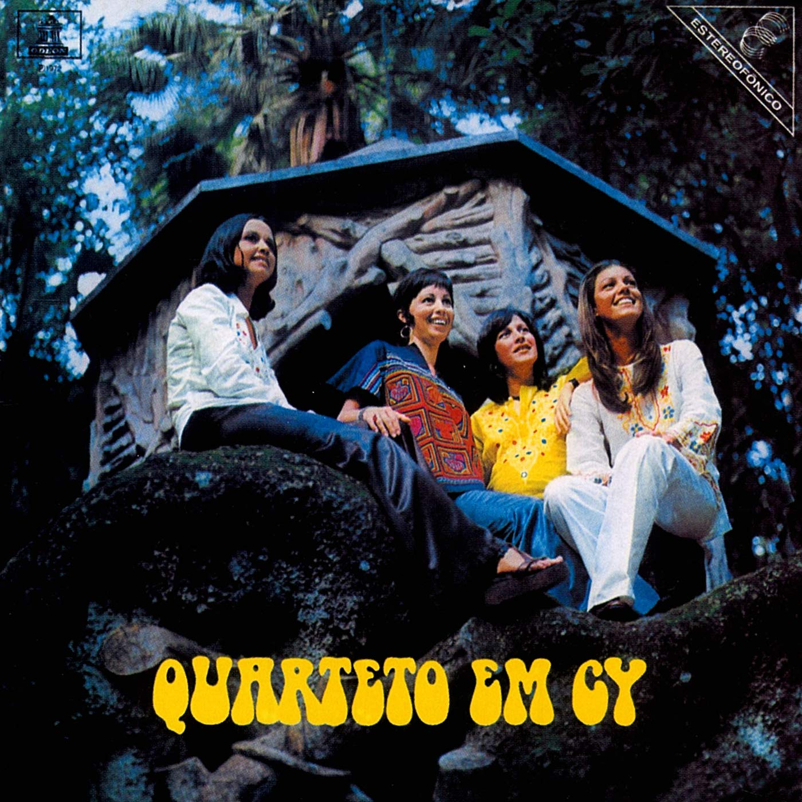

Quarteto em Cy (1972)
Quarteto em Cy
The four sisters: Cybele, Cylene, Cynara and Cyva
00:00
Those that see me still, distant
Quem me vê sempre parado, distante
00:03
Are sure I don't know how to samba
Garante que eu não sei sambar
00:08
I'm just holding on until carnaval arrives
Tô me guardando pra quando o carnaval chegar
00:16
I'm just looking, knowing, feeling, listening
Eu tô só vendo, sabendo, sentindo, escutando
00:19
And can't speak
E não posso falar
00:24
I'm just holding on until carnaval arrives
Tô me guardando pra quando o carnaval chegar
00:32
I see the porcelain legs of the girl passes
Eu vejo as penas de louça da moça que passa
00:35
And I can't have
E não posso pegar
00:39
I'm just holding on until carnaval arrives
Tô me guardando pra quando o carnaval chegar
00:47
For how long I've longed for your kiss
Há quanto tempo desejo seu beijo
00:50
Wet with passion fruit
Molhado de maracujá
00:55
I'm just holding on until carnaval arrives
Tô me guardando pra quando o carnaval chegar
01:03
And those that offend me, shaming, stomping, thinking
E quem me ofende, humilhando, pisando, pensando
01:06
That I'll put up with it
Que eu vou aturar
01:10
I'm just holding on until carnaval arrives
Tô me guardando pra quando o carnaval chegar
01:18
And those that see me taking a beating from life doubt
E quem me vê apanhando da vida duvida
01:21
I'll get my comeback
Que eu vá revidar
01:25
I'm just holding on until carnaval arrives
Tô me guardando pra quando o carnaval chegar
01:33
I see the light of a new day coming up, asking
Eu vejo a barra do dia surgindo, pedindo
01:36
For us to sing
Pra gente cantar
01:41
I'm just holding on until carnaval arrives
Tô me guardando pra quando o carnaval chegar
01:49
I've so much happiness, delayed, muffled
Eu tenho tanta alegria, adiada, abafada
01:51
How I wish I could scream it
Quem dera gritar
01:57
I'm just holding on until carnaval arrives
Tô me guardando pra quando o carnaval chegar
02:11
I'm just holding on until carnaval arrives
Tô me guardando pra quando o carnaval chegar
02:26
I'm just holding on until carnaval arrives
Tô me guardando pra quando o carnaval chegar
02:41
I'm just holding on until carnaval arrives
Tô me guardando pra quando o carnaval chegar
00:06
Yeah, maybe I'll suffer
É, talvez eu sofra
00:16
Maybe I'll cry
Talvez eu chore
00:22
Maybe you won't delay
Talvez você não se demore
00:31
Maybe
Talvez
00:36
I don't know
Sei lá
00:43
But, maybe, who knows
Mas, talvez quem sabe
00:53
It's better for it all to be over
Seja melhor que tudo acabe
01:00
Maybe
Talvez
01:06
I don't know
Sei lá
01:13
But, maybe I want to take a step back
Mas, talvez eu queira retroceder
01:25
And it's my way of asking you
E a minha maneira a lhe dizer
01:31
To take me along with you
Que me leve junto com você
01:36
My dear, I'm sorry, it's just that you
Meu bem, sinto muito, é que você
01:42
Have me, as always, at your mercy
Me tem, como sempre, à mercê
01:54
My dear, I'm sorry, it's just that you
Meu bem, sinto muito, é que você
02:00
Have me, as always, at your mercy
Me tem, como sempre, à mercê
00:17
Mounted on an iron horse
Montado num cavalo ferro
00:20
I lived, in green fields I bury myself
Vivi, em campos verdes me enterro
00:22
In Tropic American lands, Tropic American
Em terras trópico americanas, trópico americanas
00:25
Tropic American
Trópico americanas
00:28
And in the middle of it all, in a place that's still mute
E no meio de tudo, num lugar ainda mudo
00:33
Concrete iron, deaf and blind
Concreto ferro, surdo e cego
00:35
In this old, in this old
Por dentro deste velho, deste velho
00:37
In this old world
Deste velho mundo
00:40
Pulsing for a lethal second
Pulsando num segundo letal
00:42
In the Brazilian Highlands
No Planalto Central
00:45
Where they're divided, they're divided
Onde se divide, se divide
00:47
They're divided, good and evil (evil, evil, evil)
Se divide o bem e o mal (mal, mal, mal)
00:50
I'll find my way back
Vou achar o meu caminho de volta
00:52
It can be sure, it can be straight
Pode ser certo, pode ser direto
00:55
Sure path without danger, without danger
Caminho certo sem perigo, sem perigo
00:57
Without danger, without fatal danger
Sem perigo, sem perigo fatal
(instrumental)
01:15
Mounted on an iron horse
Montado num cavalo ferro
01:17
I lived, in green fields I bury myself
Vivi, em campos verdes me enterro
01:20
In Tropic American lands, Tropic American
Em terras trópico americanas, trópico americanas
01:23
Tropic American
Trópico americanas
01:25
And in the middle of it all, in a place that's still mute
E no meio de tudo, num lugar ainda mudo
01:29
Concrete iron, deaf and blind
Concreto ferro, surdo e cego
01:32
In this old, in this old
Por dentro deste velho, deste velho
01:34
In this old world
Deste velho mundo
01:37
Pulsing for a lethal second
Pulsando num segundo letal
01:39
In the Brazilian Highlands
No Planalto Central
01:42
Where they're divided, they're divided
Onde se divide, se divide
01:43
They're divided, good and evil (evil, evil, evil)
Se divide o bem e o mal (mal, mal, mal)
01:47
I'll find my way back
Vou achar o meu caminho de volta
01:49
It can be sure, it can be straight
Pode ser certo, pode ser direto
01:51
Sure path without danger, without danger
Caminho certo sem perigo, sem perigo
01:53
Without danger, without fatal danger
Sem perigo, sem perigo fatal
01:56
Sure path without danger, without danger
Caminho certo sem perigo, sem perigo
01:58
Without danger, without fatal danger
Sem perigo, sem perigo fatal
02:01
Sure path without danger, without danger
Caminho certo sem perigo, sem perigo
02:03
Without danger, without fatal danger
Sem perigo, sem perigo fatal
02:05
Sure path without danger, without danger
Caminho certo sem perigo, sem perigo
02:08
Without danger, without fatal danger
Sem perigo, sem perigo fatal
02:11
Sure path without danger, without danger
Caminho certo sem perigo, sem perigo
02:12
Without danger, without fatal danger
Sem perigo, sem perigo fatal
02:15
Sure path without danger, without danger..
Caminho certo sem perigo, sem perigo...
00:33
Through sun and rain, you dreamed
Com sol e chuva, você sonhava
00:41
That it would get better later
Que ia ser melhor depois
00:44
You wanted to be the great hero of the roads
Você queria ser o grande herói das estradas
00:47
Everything that you wanted to be
Tudo que você queria ser
00:59
I know a secret: you're afraid
Sei um segredo: você tem medo
01:07
Now you wish you could go back
Só pensa agora em voltar
01:10
You don't speak of the boot and ring of Zapata
Não fala mais na bota e no anel de Zapata
01:12
Everything that you should be—without fear
Tudo que você devia ser—sem medo
01:29
You don't remember me anymore
Não se lembra mais de mim
01:31
You didn't want me speaking of everything
Você não quis deixar que eu falasse de tudo
01:33
Everything that you could ever be—on the road
Tudo que você podia ser—na estrada
01:50
Ah! Sun and rain on your road
Ah! Sol e chuva na sua estrada
01:59
But it doesn't matter, there's no problem
Mas não importa, não faz mal
02:01
You still think and it's better than nothing
Você ainda pensa e é melhor do que nada
02:04
Everything that you're able to be—or nothing
Tudo que você consegue ser—ou nada
An "Incelença" refers to a type of song sung in funerals in honor of the deceased.
T/L Note: This song plays with letters slightly. This is a direct translation. At the bottom of the page you can find a version that translates the wordplay more faithfully.
00:41
I said an A, for our love
Eu disse um A, por nosso amor
00:45
I said a B, gentle and beautiful
Eu disse um B, brandosa e bela
00:50
I said an A, for our love
Eu disse um A, por nosso amor
00:55
I said a B, gentle and beautiful
Eu disse um B, brandosa e bela
01:00
I said a C, dear body
Eu disse um C, corpo querido
01:05
After, a D, of the pain of the earth
Depois um D, da dor da terra
01:11
I said a C, dear body
Eu disse um C, corpo querido
01:18
After, a D, of the pain of the earth
Depois um D, da dor da terra
01:28
Open hope
Esperança aberta
01:34
Wounded party
Festa ferida
01:38
War of men
Guerra dos homens
01:44
Ruined hour
Hora roída
02:08
I said a Q, an old want
Eu disse um Q, querença antiga
02:13
I said an R, wounded rose
Eu disse um R, rosa ferida
02:17
I said a Q, an old want
Eu disse um Q, querença antiga
02:22
I said an R, wounded rose
Eu disse um R, rosa ferida
02:27
In an S, I'm "hail the Queen"
Num S eu sou salve rainha
02:32
After, in a T, dark ivy
Depois num T, treva daninha
02:38
In an S, I'm "hail the Queen"
Num S eu sou salve rainha
02:45
After, in a T, dark ivy
Depois num T, treva daninha
02:56
Last wait
Última espera
03:01
Vagrant life
Vida vadia
03:06
Bloody tears
Choro sangrado
03:11
Caring for the world
Zelando o mundo
00:16
Short step, soft shoe
Passo curto, sapato mole
00:26
I walk around slowly, slowly
Vou por aí devagar, devagar
00:32
Those that don't know how to pray, curse at God
Quem não sabe rezar, xinga Deus
00:38
It doesn't matter, Christians or atheists
Tanto faz, cristãos, ateus
00:46
Dead arm
Braço morto
00:53
And one more swig
E mais um gole
00:57
I go around, bar to bar
Vou por aí, bar em bar
01:00
Bar to bar
Bar em bar
01:03
Those that don't disconnect, have it rough
Quem não se desligar, se dá mal
01:09
They won't play with a full deck
Vai aceitar pedra por pau
01:17
Crooked eye
Olho torto
01:25
The brutish are much more lucid
Bruto dá muito mais lucidez
01:36
To not drink anything is to agree with the inebriation
Não beber nada é concordar com a embriaguez
01:44
Of those that betray us every month
De quem nos trai todo final de mês
01:51
Short step
Passo curto
01:58
No one shelters me
Ninguém me acolhe
02:01
You, woman, where are you?
Você, mulher, onde está?
02:05
Don't go!
Não se vá!
02:08
The one that spawned loneliness wasn't me
Quem gerou a solidão não fui eu
02:14
Why would I raise it?
Por que é que eu vou criar?
02:22
Another null port
Outro porto nulo
02:33
Here we go, you and I
Lá vamos eu e vocês
02:41
We have nothing in common, only the laws
Nós nada temos em comum, somente as leis
02:49
Of those that betray us every month
De quem nos trai todo final de mês
02:56
Short step, soft shoe
Passo curto, sapato mole
03:06
I just spoke for the sake of it, just to say
Eu só falei por falar, pra falar
03:13
Those that just heard for the sake of it, didn't get it
Quem me ouvir por ouvir não entendeu
03:19
Follow the order and God be with you
Cumpra a ordem e vá com Deus
03:27
Short step (short)
Passo curto (curto)
00:04
Now that we're already underground
Agora que nós já somos underground
00:08
We're going to live under the earth
Vamos morar debaixo da terra
00:13
We'll play our old guitar
Vamos tocar nossa viola velha
00:17
In front of the bars of Copacabana
Na porta dos bares de Copacabana
00:24
Since it's so cool to be underground
Já que é tão bacana ser underground
00:28
We're going to stop collecting our debts
Vamos deixar de cobrar nossas dívidas
00:32
We'll sell our manioc flour
Vamos vender nossa farinha d'água
00:36
By the door of the Caruaru street fair
Na porta da feira de Caruaru
00:43
Now I don't need to read the news
Agora não preciso mais ler jornal
00:47
To know if my name appeared on some random column
Pra saber se meu nome saiu na coluna fulano de tal
00:52
To see if they spoke of my baião on television
Pra ver se falaram do meu baião na televisão
00:57
To see if I'm still all the rage
Pra ver se eu continuo na crista da onda
01:05
Now that everyone already knows
Agora que todo mundo já sabe
01:07
That we're underground
Que nós somos underground
01:10
We're going to live in an enchanted castle
Vamos morar num castelo encantado
01:15
Pampered by the bigwigs
Paparicados pelos donos da bola
01:19
Playing football under the earth
Jogando bola debaixo da terra
01:24
Like a tatu-bola under the earth
Igual tatu-bola debaixo da terra
01:29
Mouths shut
De bico calado
01:31
Because a good goat doesn't bleat
Que o bom cabrito não berra
00:00
Before the first hour, nothing will happen
Antes da primeira hora, nada vai acontecer
00:08
Before the second I'll go out and live
Antes da segunda eu saio e vou viver
00:17
Before the third day, you'll phone me
Antes do terceiro dia você vai me telefonar
00:25
All the worst things that exist in each of us will disappear
Tudo de pior que existe dentro de cada um vai sumir
00:34
Before the first month, I'll come back
Antes do primeiro mês eu vou voltar
00:42
Head hung low, I'll come back to stay
De cabeça baixa eu volto pra ficar
00:51
Before the first month, I'll come back
Antes do primeiro mês eu vou voltar
00:59
Head hung low, I'll come back to stay
De cabeça baixa eu volto pra ficar
00:13
Angry anger, I don't know what else
Zanga zangada, não sei mais de nada
00:17
Could open up your heart
Que possa abrir teu coração
00:23
Angry anger, I know almost nothing
Zanga zangada, não sei quase nada
00:27
Between anger and forgiveness
Entre a zanga e o perdão
00:33
Angry anger, I've done nearly all
Zanga zangada, já fiz quase tudo
00:38
That my heart has asked of me
Que manda meu coração
00:44
Anger, I don't want to see you like this any longer
Zanga, não quero te ver mais assim
00:49
Have some sense, make me happy
Tome juízo, me faça feliz
00:54
On a sunny day, on a seaport
Num dia de sol, num porto de mar
00:59
Teach me to smile
Me ensine a sorrir
01:02
Teach me this anger, this anger
Me ensine essa zanga, essa zanga
01:05
This angry anger
Essa zanga zangada
01:08
This angry anger
Essa zanga zangada
01:12
Angry anger, I don't know what else
Zanga zangada, não sei mais de nada
01:17
Could open up your heart
Que possa abrir teu coração
01:23
Angry anger, I know almost nothing
Zanga zangada, não sei quase nada
01:27
Between anger and forgiveness
Entre a zanga e o perdão
01:33
Angry anger, I've done nearly all
Zanga zangada, já fiz quase tudo
01:38
That my heart has asked of me
Que manda meu coração
01:43
Anger, I don't want to see you like this any longer
Zanga, não quero te ver mais assim
01:48
Have some sense, make me happy
Tome juízo, me faça feliz
01:53
On a sunny day, on a seaport
Num dia de sol, num porto de mar
01:59
Teach me to smile
Me ensine a sorrir
02:01
Teach me this anger, this anger
Me ensine essa zanga, essa zanga
02:05
This angry anger
Essa zanga zangada
02:07
This angry anger
Essa zanga zangada
02:12
Anger, this anger, this anger
Zanga, essa zanga, essa zanga
02:15
This angry, anger, this angry anger
Essa zanga, zangada, essa zanga zangada
02:22
Anger, this anger, this anger, this anger
Zanga, essa zanga, essa zanga, essa zanga
02:27
Angry, this angry anger
Zangada, essa zanga zangada
00:17
I have nothing in the way of fears
De medo eu não tenho nada
00:19
I carry the world in my hands
Eu levo o mundo na mão
00:20
But this red skirt
Mas essa saia encarnada
00:22
Puts fear in my heart
Assusta o meu coração
00:24
On the colors of this fabric
Nas cores desse tecido
00:26
My love landed
O meu amor foi cair
00:28
From the schemes of this smile
Nas tramas desse sorriso
00:29
No one can escape
Ninguém pode fugir
00:31
I know that I'll lose myself, I know
Eu sei que vou-me perder, eu sei
00:35
In your clever body, I know
Em seu corpo esperto, eu sei
00:38
In your uncertain affection, I know
Seu carinho incerto, eu sei
00:42
It's no problem
Não faz mal
(instrumental)
01:08
In song I confess
Na cantoria eu confesso
01:10
What words cannot say
O que a palavra não diz
01:12
Through this red skirt
Por essa saia encarnada
01:14
My rest has come undone
O meu sossego desfiz
01:15
In the games of this girl
No jogo dessa menina
01:17
My time has come to a halt
A minha hora parou
01:19
And in your idle body
E no seu corpo vadio
01:20
What was mine was stolen
O que era meu se roubou
01:22
I know I'll be in trouble, I know
Eu sei que vou-me dar mal, eu sei
01:26
In your clever body, I know
Em seu corpo esperto, eu sei
01:30
In your uncertain affection, I know
Seu carinho incerto, eu sei
01:33
In your open smile, I know
Seu sorriso aberto, eu sei
01:37
In your uncertain body, I know (I know)
Em seu corpo incerto, eu sei (eu sei)
01:40
Your clever affection, I know (I know)
Seu carinho esperto, eu sei (eu sei)
01:44
Your open smile, I know (I know)
Seu sorriso aberto, eu sei (eu sei)
01:47
In your clever body, I know (I know)
Em seu corpo esperto, eu sei (eu sei)
01:51
Your uncertain affection, I know (I know)
Seu carinho incerto, eu sei (eu sei)
01:55
Your open smile, I know (I know)
Seu sorriso aberto, eu sei (eu sei)
01:59
In your uncertain body, I know...
Em seu corpo incerto, eu sei...
I'd just like to make it clear that, as a Christian, I'm the least qualified person to be explaining a song that goes pretty in-depth into Afro-Brazilian religion. I researched the topic the best I could, however, so I hope this is still serviceable and respectful.
00:03
My father Xangô
Meu pai Xangô
00:05
Xangô is my father, my father is
É meu pai Xangô, é meu pai
00:07
Xangô is my father, my father is
É meu pai Xangô, é meu pai
00:10
Xangô is my father, my father is
É meu pai Xangô, é meu pai
00:12
Xangô is my father, my father is
É meu pai Xangô, é meu pai
00:18
My father Xangô
Meu pai Xangô
00:20
Xangô is my father, my father is
É meu pai Xangô, é meu pai
00:22
Xangô is my father, my father is
É meu pai Xangô, é meu pai
00:24
Xangô is my father, my father is
É meu pai Xangô, é meu pai
00:27
Xangô is my father, my father is
É meu pai Xangô, é meu pai
00:33
Protect your son (your son)
Protege teu filho (teu filho)
00:35
Obá of Xangô (Obá of Xangô)
Obá de Xangô (Obá de Xangô)
00:37
Your Obá Otum (Obá Otum), Onikoyi (Onikoyi)
Seu Obá Otum (Obá Otum), Onikoyi (Onikoyi)
00:42
That's in so much need (so much need)
Que tanto precisa (tanto precisa)
00:45
Need of you (need of you)
Precisa de ti (precisa de ti)
00:47
To compose songs (compose songs)
Pra canto compor (canto compor)
00:50
To sing songs (sing songs)
Pra canto cantar (canto cantar)
00:52
Songs in praise (songs in praise)
O canto em louvor (canto em louvor)
00:54
Of the graces of the flower (graces of the flower)
Das graças da flor (graças da flor)
00:57
Of the earth, the people and the sea of Bahia
Da terra, do povo e do mar da Bahia
01:02
My father Xangô
Meu pai Xangô
01:04
Xangô is my father, my father is
É meu pai Xangô, é meu pai
01:06
Xangô is my father, my father is
É meu pai Xangô, é meu pai
01:09
Xangô is my father, my father is
É meu pai Xangô, é meu pai
01:11
Xangô is my father, my father is
É meu pai Xangô, é meu pai
01:17
Protect your son
Protege teu filho
01:20
Your som Caymmi
Teu filho Caymmi
01:22
Dorival Obá, Onikoyi
Dorival Obá, Onikoyi
01:27
And Stella Caymmi
E Stella Caymmi
01:29
Mother of Dori
A mãe de Dori
01:31
Of Nana and Danilo
De Nana e Danilo
01:34
That is a muse and a woman
Que é musa e mulher
01:36
That is my love and my friend
Que é amor e amiga
01:39
Star Stella
Stella estrela
01:41
With my love song I had you, ay
Da minha cantiga amor recebi, ai
01:47
For being your Obá Onikoyi
Por ser teu Obá Onikoyi
01:50
For not deserving to deserve
Por não merecer ser merecedor
01:52
So much Stella, love star, ay
De tanta Stella, estrela de amor, ai
01:56
My father Xangô
Meu pai Xangô
01:58
Xangô is my father, my father is
É meu pai Xangô, é meu pai
02:00
Xangô is my father, my father is
É meu pai Xangô, é meu pai
02:03
Xangô is my father, my father is
É meu pai Xangô, é meu pai
02:05
Xangô is my father, my father is
É meu pai Xangô, é meu pai
02:08
Xangô is my father, my father is
É meu pai Xangô, é meu pai
02:10
Xangô is my father, my father is
É meu pai Xangô, é meu pai
02:12
Xangô is my father, my father is
É meu pai Xangô, é meu pai
02:15
Xangô is my father, my father is
É meu pai Xangô, é meu pai
02:17
Xangô is my father, my father is
É meu pai Xangô, é meu pai
02:20
Xangô is my father, my father is
É meu pai Xangô, é meu pai
02:22
Xangô is my father, my father is
É meu pai Xangô, é meu pai
02:24
Xangô is my father, my father is
É meu pai Xangô, é meu pai
02:27
Xangô is my father, my father is
É meu pai Xangô, é meu pai
02:29
Xangô is my father...
É meu pai Xangô...
Footnotes
Sources
00:41
I said an A, for our affection
Eu disse um A, por nosso amor
00:45
I said a B, benign and beautiful
Eu disse um B, brandosa e bela
00:50
I said an A, for our affection
Eu disse um A, por nosso amor
00:55
I said a B, benign and beautiful
Eu disse um B, brandosa e bela
01:00
I said a C, close body
Eu disse um C, corpo querido
01:05
After, a D, dirt's pain
Depois um D, da dor da terra
01:11
I said a C, close body
Eu disse um C, corpo querido
01:18
After, a D, dirt's pain
Depois um D, da dor da terra
01:28
Evident hope
Esperança aberta
01:34
Fractured party
Festa ferida
01:38
Great war of men
Guerra dos homens
01:44
Hour in ruins
Hora roída
02:08
I said a Q, quondam want
Eu disse um Q, querença antiga
02:13
I said an R, rose in tears
Eu disse um R, rosa ferida
02:17
I said a Q, quondam want
Eu disse um Q, querença antiga
02:22
I said an R, rose in tears
Eu disse um R, rosa ferida
02:27
In an S, I'm "save the Queen"
Num S eu sou salve rainha
02:32
After, in a T, tenebrous ivy
Depois num T, treva daninha
02:38
In an S, I'm "save the Queen"
Num S eu sou salve rainha
02:45
After, in a T, tenebrous ivy
Depois num T, treva daninha
02:56
Ultimate wait
Última espera
03:01
Vagrant life
Vida vadia
03:06
Bloody tears
Choro sangrado
03:11
Zeal for the world
Zelando o mundo